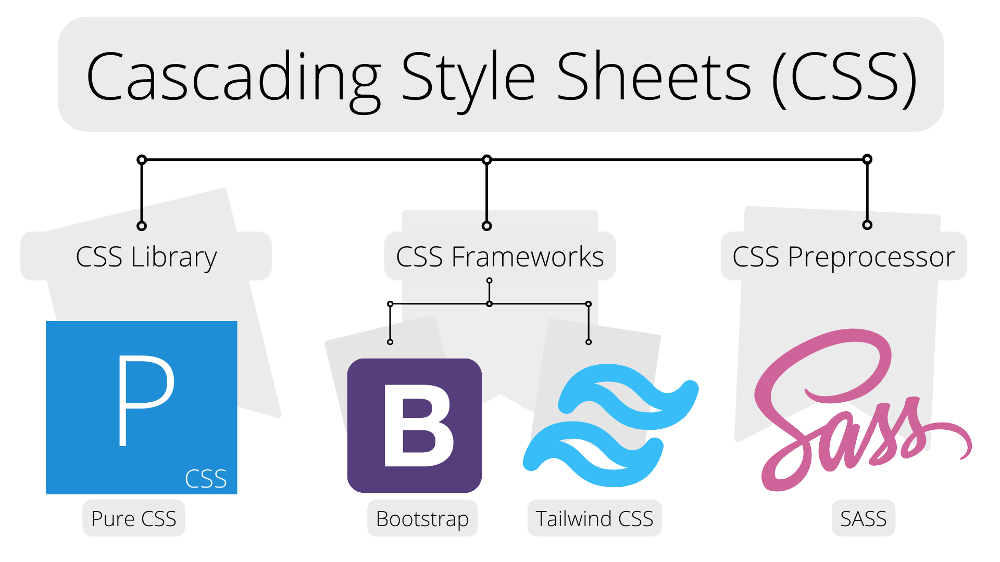

Frontend Development
Frontened development is the development of the
graphical user interface
of a website, through the use of
HTML,
CSS, and
JavaScript. so that
users can view and interact with that website.

-
HTML: The HyperText Markup Language or HTML is
the standard markup language for documents designed to be displayed in a
web browser.
-
CSS: Cascading Style Sheets (CSS) is a style
sheet language used for describing the presentation of a document
written in a markup language such as HTML or XML.

- Pure CSS
- Bootstrap (Framework)
- Tailwind (Framework)
- Sass (Preprocessor)
-
JavaScript: JavaScript often abbreviated JS, is a programming
language that is one of the core technologies of the World Wide Web,
alongside HTML and CSS. It is use to add functionality in the website.

- Vanilla JS
- jQuery (Library)
- React (Framework)
- Angular (Framework)
- Vue (Framework)
- Typescript (Preprocessor)
All copyrights © reserved